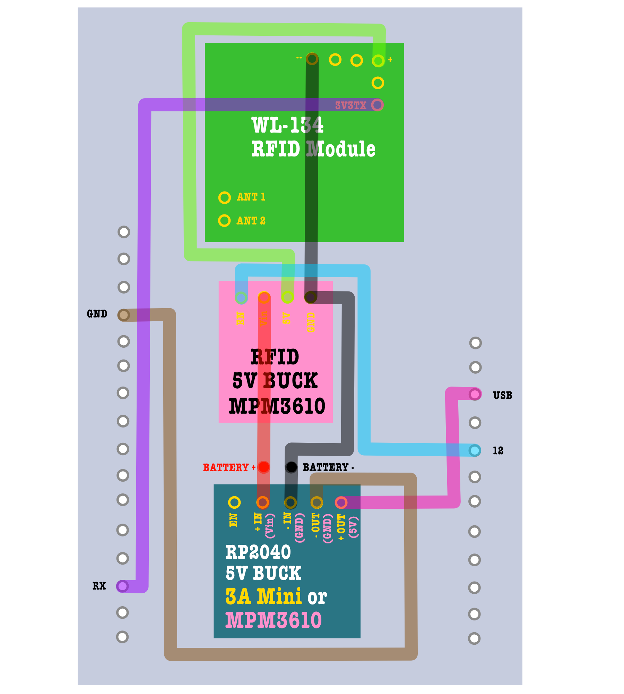

Introduction
The purpose of this page is to detail the process for building RFID devices for ecological research.
Introduction
This page describes how to make a device that reads 134.2khZ PIT tags and records them into a csv file with the corresponding time it was recorded. It can be used for animal tracking and research.
Is this project for me?
I don't have electronics experience. Is that okay?
This project is recommended for non-electrical/technical people with a strong DIY spirit to develop their electrical engineering knowledge. We use a lot of Adafruit products, which are beginner-friendly but still require some technical knowledge (which we will explain below). You may need to invest in some materials and equipment to successfully complete this project (outlined in 'Tools Required' section).
I don't have time to learn all of this.
We recommend exploring ready-to-use market options, such as the ETAG, Priority One Design and Biomark.
Are there any alternative instructions?
Dr. Eli Bridge has instructions for building the RFIDLog, a device that logs 134.2khZ tags as well, and works in a much more energy efficient way. However, you will need to print your own customized PCB and make your own antenna (whereas our project works with products directly available on the market, and uses a factory antenna, so you do not need to make your own).
Do I have the right PIT tags for this?
This project is for reading ISO FDX-B 134.2khZ PIT tags, the same kind of tags found in your household pets.
If you are studying wild animals, you need to acquire these tags, acquire the relevant permits, and find a reliable and safe way to attach these tags to the animals. For example, presently, no bird leg bands with 134.2kHz PIT tags are readily available on the market, so you need to make your own.
Is this the right frequency for me?
PIT tags also come in 125kHz, with electrical components that are cheaper and easier to source because they are widely used by hobbyists. Using 125kHz RFID readers simplifies wiring for a DIY electronics project, because they have lower voltage requirements compared to 134.2kHz RFID readers. 125kHz tags and readers also have similar performance to those of 134.2kHz. If studying birds, leg bands with 125kHz PIT tags are available for sale by Eccel Technologies.
Electronic Parts List
Below outlines the list of parts for the electronics.
Some items come in packs, so purchase your parts according to how many you need.
Purchase links are not affiliate/sponsored links.
| Part Name | Function | Purchase Link | Quantity per feeder | Alternatives |
|---|---|---|---|---|
| Adafruit Feather RP2040 Adalogger - 8MB Flash with microSD Card - STEMMA QT / Qwiic | Main controller for processing and logging data | Adafruit | 1 | |
| WL134 (RFID Module) | Reads 134.2khZ tags |
Amazon Newegg |
1 | |
| MPM3610 5V Buck Converter Breakout - 21V In 5V Out at 1.2A | Provides 5V to the RFID module |
Adafruit Digikey |
1 | |
| 3A Mini DC-DC Buck Step Down Converter Board Module 5V-30V to 5V DC DC Voltage Regulator PCB Board Power Buck Module | Provides 5V to the RP2040 |
Amazon Newegg |
1 | MPM3610 5V Buck Converter (above) essentially provides the same function, but this device is cheaper. |
| DS3231 Precision RTC FeatherWing - RTC Add-on For Feather Boards | Keeps time for the RP2040 |
Adafruit Digikey Newegg Walmart |
1 |
Use any other DS3231 RTC available on the market. You will need to solder it to the proto-board instead of stacking it with the OLED monitor. If DS3231s are out of stock: DS1307, PCF8523, and PCF8563 can be used with a change in the code. |
| Adafruit FeatherWing OLED - 128x64 OLED Add-on For Feather - STEMMA QT / Qwiic | For checking device functionality |
Adafruit Digikey |
1 | Any other OLED 128x64 monitor with an SH1107 driver will work with the current code, but with added complexity, as the OLED monitor will need to be soldered onto the proto-board PCB. |
| FeatherWing Tripler Mini Kit - Prototyping Add-on For Feathers | Connects RTC, OLED, WL134 and power components to each other |
Adafruit Digikey |
1 | |
| 22AWG Solid Core Wire (silicone insulation recommended for beginners) | Makes connections between electrical components | a few pieces | You will find solid core wire with PVC insulation (e.g. from Adafruit). However, silicone insulation is recommended for people who do not solder regularly, as PVC insulation melts very easily. | |
| Lead-Free Solder Wire Rosin Core Flux Electric Solder | Creates connections between wires, pins and boards | Adafruit Newegg |
1 | Lots of difference places sell lead-free solder. You may also use solder with lead, but beware that the lead residue and fumes are a health hazard. |
| 22 Gauge Flexible 2 Conductor Parallel Silicone Wire Spool | Protects antenna wires |
BNTechgo Newegg |
a piece | |
| Stacking Headers for Feather - 12-pin and 16-pin female headers | Makes connections between the RTC and the OLED monitor | Adafruit | 1 | |
| Female headers | Makes connections between the RFID module and the perf board. | Adafruit | 1 | |
| 30mm x 70mm proto-board PCBs | Connects RFID module and 5V bucks to the RP2040 feather | Adafruit Walmart |
1 | |
| DR.PREPARE 12V 7Ah LiFePO4 Battery, Lithium Batteries 12v with 7A BMS, 4000+ Deep Cycle Lithium Iron Phosphate Rechargeable Battery | Powers the device |
Amazon Walmart |
2 (one for deploying, one for swapping out in the field) | |
| Mini Micro JST-XH 2.54mm Pitch 2 Pin Male Connector with 10cm Silicone Wire Cables and Female Socket | Connects the antenna to the RFID module |
Amazon Walmart |
1 | |
| (Real 18AWG) 12V 5A DC Power Pigtail Barrel Plug Connector Cable, 2.1mm x 5.5mm Male Female DC Pigtail Connectors | Connects the board to the battery |
Amazon Newegg |
1 | |
| Inline Fuse Holder Waterproof Automotive Replacement with ATC Blade Fuses (16 Awg with 10 A) | Protects electrical circuit from excess current | Amazon | 1 | |
| 5 Amp Standard Fuse, 5A Car Blade Fuses | Protects electrical circuit from excess current |
Amazon Walmart |
1 | |
| CR1220 Battery | Powers the real time clock (RTC) | 1 | If you use an RTC different from the DS3231 Featherwing, adjust your battery accordingly. | |
| 8 to 32GB microSD Card | Stores data | Sandisk | 1 | We recommend a reliable brand, but you may use any other FAT-32 formatted 8GB to 32GB microSD card. The microcontroller will not work with SD cards of bigger sizes and higher GB. |
| AC/DC 14.4V/3A LiFePO4 Battery Charger with Dual Alligator Clips Connector for 4S 12V 12.8V Rechargeable Lithium Iron Phosphate Battery Pack | For charging 12V batteries |
Amazon Newegg |
1 | |
| USB-C Dust Plug (recommended) | To prevent people from plugging the RP2040 into a computer without disconnecting the battery first | 1 | Create your own mechanism | |
| Junction Box ABS Plastic Dustproof Waterproof IP65 Electrical Boxes Hinged Shell Outdoor Universal Project Enclosure 8.7 x 6.7 x 4.3 inch | For keeping electronics dry |
Amazon Newegg |
1 | Use any other size of waterproof project box that can fit the 12V battery and the electronic board. |
Tools Required
We recommend the following for a successful build:
- Soldering Iron with a bevel tip, at least 60W and adjustable temperature control
- Solder tip tinner to clean soldering iron
- Wire cutters
- Wire strippers able to work with 22 AWG wire
- Crimping Tool able to work with 22 AWG wire
- Well-ventilated area for soldering
- Heat-proof silicone mat or other surface for soldering
- Computer able to download the Arduino IDE for flashing code
- USB-C Cable with data transfer that can plug into your device
- Continuity Tester to troubleshoot soldered connections
Electronics Assembly
If you have never soldered before, we recommend watching some YouTube videos to familiarize yourself with the process. The instructions for board assembly also progress from easy to moderately hard, and provide a great introduction to people who have never worked with electronic components before.
Below details the steps to assemble the electronics. Though the videos below look the same, there are unique start and end time stamps for each player, so you can play the content for the corresponding section.
Assemble the boards
Assemble the Featherwing Tripler Mini-kit
- Arrange 12 and 16 female header pins as pictured.
- The 12 pin header will go on the side with the letters 'SDA' and 'SCL'.
- The 16 pin header will go on the other side.
- Solder all header pins onto the Featherwing Tripler.
Solder male header pins onto the RP2040 Microcontroller
- Arrange the 12 pin and 16 male header pins on the RP2040 with the long side of the header pins on the side where there is no SD card slot.
- Solder all header pins onto the RP2040.
- Fit RP2040 onto the tripler board.
Solder male header pins onto the OLED
This is the same process as soldering male header pins on the RP2040 microcontroller. Your component may come pre-soldered, so you may skip this step depending on your needs.
Solder stacking header pins onto the RTC Featherwing
- Arrange stacking header pins on the RTC Featherwing. The side with the plastic female headers should be on the same side as the battery slot.
- Solder all header pins onto the RTC.
Solder SQW pin to GPIO 25 of the RP2040
- Strip a small bit of insulation off of your solid core wire.
- Insert the end of that wire into the SQW hole of the RTC.
- Measure the path and how much length the wire needs to reach pin 25's hole (7th hole up on the 16 pin side).
- Cut the wire to a bit more than the length measured in the previous step, then strip off the excess insulation.
- Solder wire to the board.
- Solder bridge between the wire at pin 25 and the header pin.
Stack Adafruit devices together
- Insert RTC male headers into a slot in the tripler.
- Stack OLED on top of the RTC by inserting the OLED's male headers into the female headers of the RTC.
Solder header and JST pins onto the RFID module (WL-134)
- Insert male headers into the +, -, TX and RST holes of the WL-134 (total of 6 male headers).
- Solder male headers into the holes.
- Insert a 2 pin JST connector into the ANT1 and ANT2 holes.
- Solder the JST connector into the holes.
Solder female header pins on the proto-board PCB (perf board)
- Solder 12 male header pins on the right end of a 30mm x 70mm proto-board (Select the side with a shorter distance from the last row of holes to the edge of the board to be your right end).
- Align your 16 male header pins on the left end of a 30mm x 70mm proto-board, leaving a 7 hole gap between the left and right header pins. You can use the tripler or Adafruit RP2040 or OLED monitor to figure out the spacing of your header pins.
- Once you are confident of your 16 pin headers' placement, solder in the headers.
Solder female headers for WL-134
- Gather 2 sets of 3 pin female headers.
- Decide where to put your WL-134 on your proto-board PCB. Make sure there will be no obstacles impeding the WL-134 when you snap this component onto the board.
- Place female headers onto the holes of your proto-board where you want your WL-134 to live.
- Once you are confident with your placement, solder the female headers onto the board.
Prepare male DC connectors
- Twist the ends of the stranded wire on the male DC connector
Bridge the 5V pads on the back with solder if using 3A Mini Buck Converter
Make connections between the DC connector wires and your 5V bucks
- Solder the DC connector wires onto the proto-board PCB.
- Solder the DC connector wires onto the proto-board PCB.
- Solder the red wire to the 'IN +' or 'Vin' of your bucks.
- Solder the black wire to the 'IN -' or 'GND' of your bucks.
- Check soldered connections have continuity (visually is fine, but with a continuity tester is better).
Watch the following for an explanation on the 5V bucks (especially relevant if using 2 MPM3610 bucks):
Make wire connections between your bucks and RFID module to the RP2040
- Set up solid core wires to make connections. (similar to how you connected the SQW pin of the RTC to one of the male header pins). The Adafruit website provides the pin mapping for the RP2040 Adalogger.
- If making connections to the RP2040 Adalogger, just wire the connections from your bucks and RFID modules to the corresponding pin position on your proto-board. No need to wire things all the way to the original board (this is the beauty of the tripler).
- Make the following connections:
- 5V pin of your RP2040 buck (3A Mini or MPM3610) to USB pin of RP2040 Adalogger
- GND pin of your RP2040 buck (3A Mini or MPM3610) to GND pin of RP2040 Adalogger
- 5V pin of your RFID buck (MPM3610) to WL-134's + (positive) pin
- GND pin of your RFID buck (MPM3610) to WL-134's - (negative) pin
- EN pin of your RFID buck (MPM3610) to pin 12 of RP2040 Adalogger
- 3v3Tx pin of your WL-134 to RX pin of RP2040 Adalogger (NOT 5V TX pin)
- After all wires are set up, double check your connections.
- Solder connections between wires, boards and header pins.
- Snip off excess wire if desired
- Test connections with a continuity tester.
Below is a summary of all the connections you will make in this step:

Secure your PCB onto the tripler
- Plug in WL-134 onto your proto-board/PCB.
- Plug in proto-board onto last slot of your tripler
Antenna and attachment to project box
Solder factory antenna onto parallel wires
Solder parallel wires onto aviation connector
Drill hole into project box
Attach the aviation connector into the project box
Plug in male JST connector to female JST connector on the WL-134
The battery
Code for RP2040 Data Logger
We will upload a code to the RP2040 Adalogger to tell it to log RFID data.
Set up the Arduino IDE
Please follow these steps to set up the Arduino IDE on your computer to work with the RP2040 Adalogger.
Install libraries
Here are instructions on how to install libraries in the Arduino IDE. Please install the following libraries.
- SdFat
- RTCLib
- Adafruit_GFX
- Adafruit_SH110X
Review code
Please download this code on Github, and open it with the Arduino IDE. Make the following changes to your code depending on your needs. You may use Ctrl+F or Cmd+F on the Arduino IDE to find the exact lines of code mentioned below.
Device ID
To keep track of which device logged what, you may (and should?) change your device ID with a unique number or name each time you flash a microcontroller. Edit the text in between the double parentheses.
const char* deviceID = "01"; // MODIFY THIS FOR EACH DEVICE
We do not recommend excessively long device IDs (over 8 characters), because it may create issues with creating files on the SD card.
We recommend labeling each RP2040 device with a sticker after code is uploaded to keep track of your device IDs.
List of Check Tags
We have programmed the OLED monitor to turn on when a scanned tag matches the ID in the list of check tags. We did not want all tags to turn on the OLED monitor to save battery power.
This feature is nice to check device functionality, but you can omit this step if needed.
You can simply test whether the RFID module is working by looking out for a blue light flash when a tag is scanned, and you can turn on the OLED monitor by pressing button A.
However, if you would like the 'Check Tag' functionality, please modify the tag IDs in the following lines of code. Ensure each tag ID is between double parentheses, and that there is a comma separating each ID.
// MODIFY THIS LIST WITH YOUR CHECK TAG IDs
const char* checkTags[] = {
"1175348100",
"6968D395D1",
"6475348100"
};
Wake/Sleep Times
You may choose to have dynamic or static sleep times.
If you choose to use dynamic sleep times, please change the time zone, latitude and longitude coordinates to fit your location. Remember that locations to the west of the Prime Meridian have negative longitude.
const float LATITUDE = 33.9423; // CHANGE THIS TO YOUR LOCATION's LATITUDE
const float LONGITUDE = -83.3724; // CHANGE THIS TO YOUR LOCATION's LONGITUDE
const int TIMEZONE = -4; // CHANGE THIS TO REFLECT YOUR TIME ZONE
If you choose to use static sleep times, please modify startSleepTime and endSleepTime variables according to your desired sleep and wake times.
// Default sleep times. startSleepTime should be bigger than endSleepTime
float startSleepTime = 21.75; // 9:45 PM, MODIFY TO CHANGE SLEEP TIME
float endSleepTime = 5.5; // 5:30 AM, MODIFY TO CHANGE WAKE TIMEAdditionally, please replace true with false in this line.
const bool dynamicSleep = true; // SET THIS TO false IF YOU WANT STATIC SLEEP AND WAKE TIMESUpload Code (sketch) onto the RP2040
Follow the instructions on uploading code onto an RP2040 Adalogger. Instead of the 'Blink' sketch however, you will be uploading this code you downloaded in the previous step.
If the code was successfully uploaded, you will see an output like "Wrote ____ bytes in _____ seconds."
Troubleshooting Code
Here are the most common problems I encountered as a newbie while working with the RP2040 code.
- Can't see the board on my dropdown!
- Try another cable. Make sure it is capable of data transfer.
- Try another USB port
- Force it into bootloader mode, or press the 'RESET' button. Something like 'RPI-RP2' should appear in the dropdown menu. Choose that and try to upload again.
- There's errors in the code!
- Make sure you have downloaded all the required libraries
- If you added or deleted things from the code, start over from the original code. Make sure that your edits did not delete or add an extra semicolon, parenthesis, curly bracket or comma by accident.
- The code failed to upload!
- Make sure you chose the correct board in the dropdown menu. It should say 'Adafruit Feather RP2040 Adalogger', and it should be in bold.
- Press the reset button or force bootloader mode. (This may also fix serial port errors)
- The rainbow light (neopixel) is still on!
- Download the Adafruit Neopixel library in your library manager of the Arduino IDE.
- Upload the following code to your RP2040 Adalogger:
#include <Adafruit_NeoPixel.h> Adafruit_NeoPixel pixels(1, 17, NEO_GRB + NEO_KHZ800); void setup() { pixels.begin(); pixels.clear(); pixels.show(); } void loop() {} - Verify the light is off.
- Re-upload the original code.
If you have any other issues, internet resources such as the Adafruit Forum and Arduino Forum are great places to get answers.
Testing your device
After you have done all of the steps above, you are ready to test the device.
Power the tripler
If you have just flashed code, unplug the Adalogger from your computer. Plugging in your device to the 12V battery and your computer simultaneously could damage your computer.
Plug the male DC connector on your board into the female DC connector of the battery.
If the device starts smoking or smelling funny, unplug the battery immediately and re-examine the connections on the board, preferably with a continuity tester.
- Wires may not be soldered to the appropriate pins
- Wires on the board may have broken (solid core wire will break after a few bends).
Verify your components are functioning
- Insert an SD card into the SD card slot of the Adalogger.
- Insert a battery into your RTC. If using the DS3231 Featherwing RTC, the battery is CR1220.
- Test the OLED monitor.
- Press button A to turn on the monitor. Examine the text.
- Press button B to switch screens on the OLED monitor. Examine the RTC time.
- Press button C to turn the monitor off.
- Test the WL-134 RFID Module. Touch a 134.2kHz FDX-B tag to the antenna. Look for a blue light flash on the WL-134 everytime you scan a tag.
- Test the power saving mechanism. Attempt to scan a PIT tag during the sleep time. The OLED monitor buttons and the WL-134 should be unresponsive.
- Test the waking mechanism of the RTC. Attempt to scan a PIT tag after the device has slept. The OLED monitor buttons and the WL-134 should be responsive.
Troubleshoot any non-functional components
Before reading the sections below, verify that all of your pins are inserted properly into the female headers (no extra prongs on the PCB boards are sticking out).
Potential Issues and Possible Solutions:
OLED is not turning on
- Check that your battery is charged.
- Check that the battery is connected well to Tripler board.
- Check the wired connections on 5V buck for the RP2040. Test continuity between the buck and the header pins on the RP2040. Solder and wire should have good contact with the buck's pads, otherwise the RP2040 may be undervolted. Reflow solder, reinforce connections or replace wires if needed.
RFID module is not flashing blue when I read a tag
- Check the wired connections on 5V buck for the WL-134. Test continuity between the buck and the header pins on the WL-134. Solder and wire should have good contact with the buck's pads, otherwise the RFID module may be undervolted. Reflow solder, reinforce connections or replace wires if needed.
- Check placement of wire and continuity between RP2040's RX and WL-134's 3v3TX pin.
- Check placement of wire and continuity between RP2040's pin 12 and WL-134's + pin.
RTC time is wrong
- Re-upload the code to the device via the Arduino IDE.
Device isn't waking up
- Ensure you connected the SQW pin on the RTC to pin 25.
- Reflow or reinforce the soldered bridge on pin 25 and the wire to the SQW pin
Device can't detect the SD card
- Ensure your SD card is fully plugged into the card slot and in the correct direction.
- Ensure your SD card is 32GB or below.
- Ensure your SD card is FAT-32 formatted.
Feeder Enclosure Parts List
Below outlines the list of parts for building the PVC tube feeder.
| Part Name | Function | Purchase Link | Quantity per feeder | Alternatives |
|---|---|---|---|---|
| Junction Box ABS Plastic Dustproof Waterproof IP65 Electrical Boxes Hinged Shell Outdoor Universal Project Enclosure 8.7 x 6.7 x 4.3 inch | For keeping electronics dry |
Amazon Newegg |
1 | Use any other size of waterproof project box that can fit the 12V battery and the electronic board. |
| PVC Fence Post | Holds bird seed | 1 | ||
| Wooden Fence Picket | Mounts feeder to pole and stake | Home Depot | 1/2 | Cedar is more durable and may last a few more seasons, but pine is cheaper. |
| Pole Stabilizer Stand Base with 4 Prongs for Outdoor Bird Feeder Pole | Stakes pole into ground | 1 | ||
| Pole | Elevates feeder from the ground | 1 | ||
| Piano Hinges | Provides cover for seed reservoir and to open and close feeder | 1 | ||
| Screws | Screws wooden parts together with the PVC reservoir | 1 | ||
| Velcro | Mounts PVC feeder to the wooden backboard | 1 | ||
| Mounting plate | Mounts wooden backboard to pole | 1 |